Sukruthi Chidananda
I’m a Robotics Engineer on the Autonomy Team at Bear Robotics, where I work on getting our robots to navigate safely and in a way that feels natural and comfortable around people.
I have an MS in Robotics from the University of Michigan and a B.Tech in Mechanical Engineering from Amrita School of Engineering.
If you’re interested in HRI, human-aware navigation, or have any questions, feel free to reach out.
Email / GitHub / LinkedIn / YouTube
News / Experience / Projects / Education / Research

News
- June 2026Started new role at Bear Robotics.
- June 2026I will be attending CVPR 2026.
- June 2025Super excited to share that I will be presenting my work on “Memory-Augmented Model Predictive Controller for Human-Following Robot in Cluttered Space” at UR 2025.
- Sept 2024Excited to share that I have started my research fellowship at the National Institute for Occupational Safety and Health!
- May 2024I have officially graduated with an MSc in Robotics.
Experience
Bear Robotics
Autonomy TeamHuman-aware navigation for our robots.
Vecna Technologies
Robotics EngineerBuilt the autonomy stack for the UB1 robot deployed in hospitals and museums: localization and point-to-point navigation (94% goal success across 60+ trials on three robots), a human-following feature, an LLM-based voice interface, AprilTag and IR auto-docking, and the migration of the software stack from NVIDIA Xavier to AGX Orin.
NIOSH
Robotics Research EngineerDeveloped a Memory-Augmented Model Predictive Controller for human-following robots in cluttered environments (presented at UR 2025), built AprilTag-based perception for robotic masonry, and supported human-subject studies on proxemics, safety and attention around mobile robots and in VR.

Fluent Robotics Lab
Independent Research — University of MichiganStudied eye gaze as a predictor of human navigation intent using the MoGaze and THÖR-MAGNI datasets, and identified where gaze-only predictors fail in cluttered and ambiguous scenes.
Flight dynamics Lab
Research Assistant - University of MichiganFlight-tested tailsitter and custom UAV platforms, configured PX4 Autopilot and QGroundControl, and designed waypoint-navigation missions with position control. Flight demo video.
ROAHM Lab
Research Assistant — University of MichiganWorked on reachability-based trajectory planning with Forward Reachable Sets, and cut FRS computation time by 58.6% in the REFINE framework through zonotope slicing.

Volvo Groups
Mechanical EngineerDesigned a tilting fixture for AC gas cylinders, deployed a digital Andon system for shop-floor monitoring, and redesigned shop-floor layouts through spaghetti-diagram analysis, alongside AGV deployment and a lean manufacturing study.
Projects
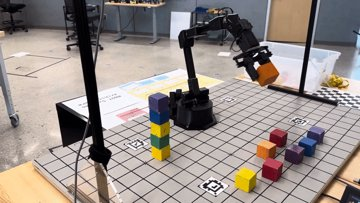
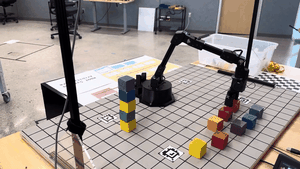
Vision-Driven Robotic Manipulator: A Gateway to precision-based Automation
- Camera Calibration: Spearheaded the integration of an Intel RealSense L515 camera with the Interbotix RX200 5DOF robotic arm, enhancing depth and color perception for advanced block detection and object tracking in a marker-laden environment.
- Kinematics Integration: Implemented Forward and Inverse Kinematics (FK and IK) for precise trajectory and motion planning, enabling efficient execution of complex tasks like stacking and sorting with the robotic arm. Achieved high accuracy in object manipulation and motion planning.
- Autonomous Interactions: Developed the robotic arm's autonomous capabilities for tasks such as stacking, alignment, and color-based segregation, demonstrating advanced interaction skills.
- Algorithmic Innovation: Crafted path planning algorithms ensuring collision-free movement, significantly optimizing the robot's performance in task execution.
- Competition Achievement: Secured 3rd place in a competitive environment, highlighting the project's success and the team's technical proficiency.
Tools: OpenCV, Python, PyTorch, NumPy
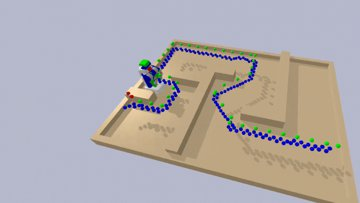
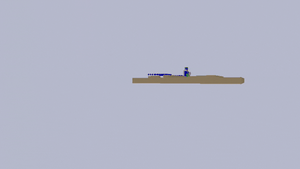
Robot Localization: Kalman Filter and Particle Filter
- Objective: Aimed to develop and refine Kalman and Particle filters for accurate localization in autonomous robotics.
- Development and Testing: Developed and implemented Kalman and Particle filters, creating scenarios in PyBullet for testing. Conducted comprehensive integration and testing with robot motion models in varied conditions.
- Result: The comparative analysis of the Kalman and Particle filters revealed crucial insights. The Particle Filter demonstrated resilience in non-linear environments, emerging as a versatile choice for state estimation in complex scenarios.
Tools: Python, PyTorch, NumPy, PyBullet
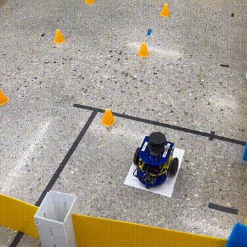
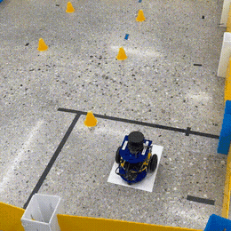
Autonomous Robot for Warehouse-Like Environment
- Odometry System Refinement: Calibrated PID controllers to enhance the robot's odometry-based positioning and mapping, utilizing wheel encoders and IMUs for improved accuracy.
- Particle Filter-Based SLAM: Developed a SLAM system with AMC/Particle-filter on the Mbot platform for dynamic localization, supported by a 2D Occupancy-Grid mapping method.
- Motion Control Optimization: Advanced motion control using PID algorithms, leveraging odometry data and IMU sensors for precise maneuvering and trajectory maintenance.
- Exploration Algorithm: Deployed a frontier-based algorithm for exploration, using 2D RP Lidar to detect reachable frontiers, and implemented the A* algorithm for optimal path planning.
- Computer Vision Integration: Employed an RGB camera for environmental perception, facilitating cube orientation detection with Apriltag recognition for interaction tasks.
- Robotic Manipulation: Custom-designed a gripper for warehouse-style cube manipulation, integrating it with the robot's autonomous systems for task execution.
- System Integration and Navigation: Combined odometry, SLAM, vision systems, and a custom gripper with a Jetson Nano, enhancing the two-wheeled differential drive robot’s autonomous navigation and operational efficiency.
Tools: Python, C++, NumPy, PyBullet, PyTorch, ROS, git
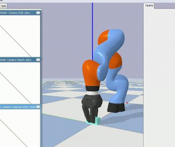
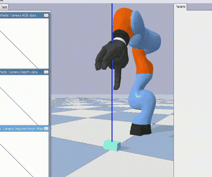
Evaluation of grasp stability using friction cones for Kuka Robot
- Robotic Grasp Stability Analysis: Analyzed robotic grasp stability in a simulated environment, focusing on friction cone volume in different grasping scenarios with a Kuka robot.
- Simulation Environment: Utilized a PyBullet-based simulation for evaluating the effectiveness of robotic grasps.
- Grasp Stability Metrics: Calculated actual volume and discretized volumes (4-edge and 8-edge) of friction cones to assess grasp stability.
- Force Closure Evaluation: Determined grasp stability by checking for force closure in robotic handling.
Tools: Python, PyTorch, NumPy, PyBullet
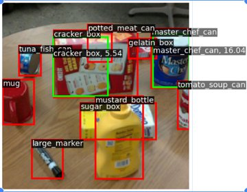
Object Detection in Cluttered Environments with RPN and Mask R-CNN
- Advanced Object Detection Technique: Implemented object detection in cluttered environments using Region Proposal Networks (RPN) and Mask R-CNN.
- PROPS Dataset Utilization: Employed the PROPS dataset, comprising annotated bounding boxes for 10 object classes, enhancing detection accuracy.
- Optimization Techniques: Implemented Non-Maximum Suppression (NMS) for refining detection by selecting high-scoring boxes and eliminating lower-scored ones.
- Loss Calculation: Computed box regression loss and objectiveness loss, crucial for model accuracy.
Tools: Python, PyTorch, NumPy, PyBullet
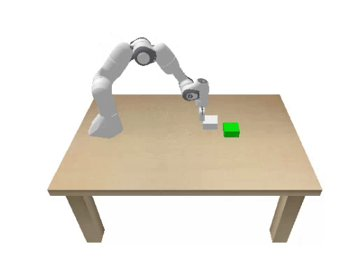
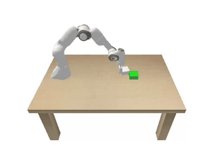
Robotic Manipulation: A Model-Based Approach for Dynamic Planning and Control
- Dynamic Model Implementation: Developed a robust dynamic model for robot planning and control, enabling precise object manipulation within a PyBullet simulation environment.
- SE2PoseLoss Prediction: Innovated a pose prediction method with SE2PoseLoss, ensuring accurate forecasting of object placement post-robotic action.
- Residual Dynamics Learning: Advanced the learning of system dynamics through Residual Dynamics Learning, streamlining the complexity of mapping predictions for improved learning efficiency.
- MPPI Controller Modeling: Modeled an MPPI controller to strategically plan a sequence of actions, optimizing the robot arm's path to the goal configuration.
- Neural Network for Dynamics: Trained a three-layer neural network with ReLU activations to model the pushing dynamics, enhancing the robot's interactive performance.
- Task-Specific Requirement Encoding: Defined a cost function that encoded task-specific requirements, enabling the robot to minimize goal distance and avoid obstacles efficiently.
Tools: Python, C++, NumPy, PyBullet, PyTorch, ROS, Eigen
Education
University of Michigan
Master of Science in Robotics- ROB 422: Algorithmic Robotics
- ROB 550: Robotics Systems Laboratory
- ROB 501: Linear Algebra
- ROB 502: Programming for Robotics
- EECS 565: Linear Feedback Control
- AEROSP 584: Navigation & Guidance of Aerospace Vehicles
- ROB 498: Robot Learning for Planning & Control
- ROB 599: Deep Learning for Robot Perception
Amrita School of Engineering
B.Tech in Mechanical Engineering- 15MEC212: Kinematics of Machines
- 15MEC302: Dynamics of Machines
- 15MEC403: Industrial Robotics
- 15MEC232: Automotive Technology
- 15MEC402: Control Engineering
- 15MEC411: Operations Research
- 15MAT214: Probability and Statistics
Research
My research interests are human intent modeling, predictive and learning-based control, and safety-aware decision-making for human-robot interaction.
Following in Cluttered Spaces Using Memory-Augmented Model Predictive Controller
Sukruthi Chidananda
International Conference on Ubiquitous Robots, 2025 (Poster)
paper
Analysis of Subsonic Flow Over Delta-Winged Aircraft
C. Sukruthi, Ashika, S. Shali
AIP Conference Proceedings, July 30, 2021
paper